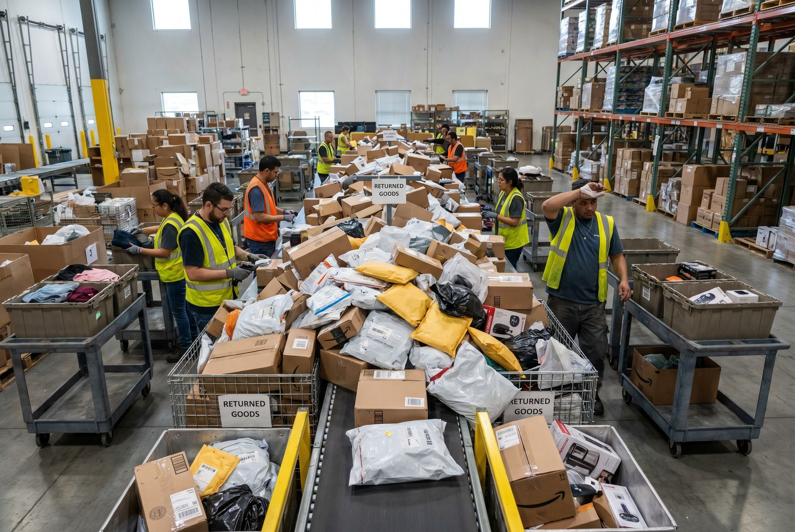

En returneret vare koster at sende, modtage og behandle. Med 17-20% returrate er det en massiv driftspost, som de færreste har isoleret i budgettet.
Hvad koster en retur?
| Post | Kr. per retur |
|---|---|
| Returfragtomkostning | 30-80 |
| Intern håndtering | 62-104 |
| Kontrol og genoprydning (10-20 min) | indeholdt ovenfor |
| Ny emballage | 5-15 |
| Direkte total | 100-200 |
Regnestykket
300 ordrer/dag, 18% returrate: 54 returner/dag × 150 kr. = 8.100 kr./dag = 2.956.500 kr./år i direkte returomkostninger alene.
👉 Få overblik over din returrate og returomkostning per kategori. Kontakt SmartPack
5 returårsager og hvad du kan gøre ved dem
| Årsag | Andel | Kan reduceres? |
|---|---|---|
| Forkert størrelse/variant | ~35% | Delvist (bedre størrelsesguide) |
| Varen svarede ikke til beskrivelse | ~25% | Ja (bedre produktdata og billeder) |
| Defekt/beskædiget | ~15% | Ja (bedre emballage) |
| Fortrydelse | ~15% | Nej |
| Plukkefejl | ~10% | Ja (WMS og scanning) |
60-70% af returner er potentielt reducerbare.
Det opdager de fleste for sent
3 procentpoint returrate-reduktion ved 300 ordrer/dag = 602.000 kr./år sparet i direkte returomkostninger. Det er et lavthængende resultat, når årsagsdata er til rådighed.
Typiske fejl
- Behandler alle returner ens uden sortering efter årsag og stand.
- Ingen returnårsags-analyse, så de samme årsager gentages måned efter måned.
- Langsom returbehandling, der forsinker gen-salg og binder lagerplads.
Sådan gør du det rigtigt
- Kræv returårsag ved alle returner: 4-5 forudindstillede muligheder er nok.
- Sæt SLA på 24-48 timer fra modtagelse til vare er klar til gen-salg.
- Korrelér returrate med produktkategori månedligt og agér på outliers.
SmartPack og returhåndtering
SmartPack sporer returner, årsager og behandlingstid, så du har data til både at reducere returrate og optimere den interne håndteringsproces.